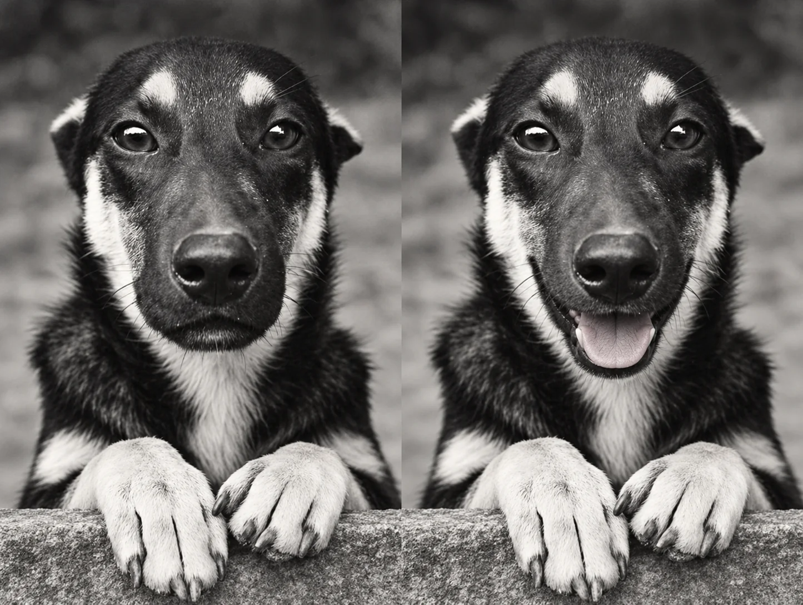
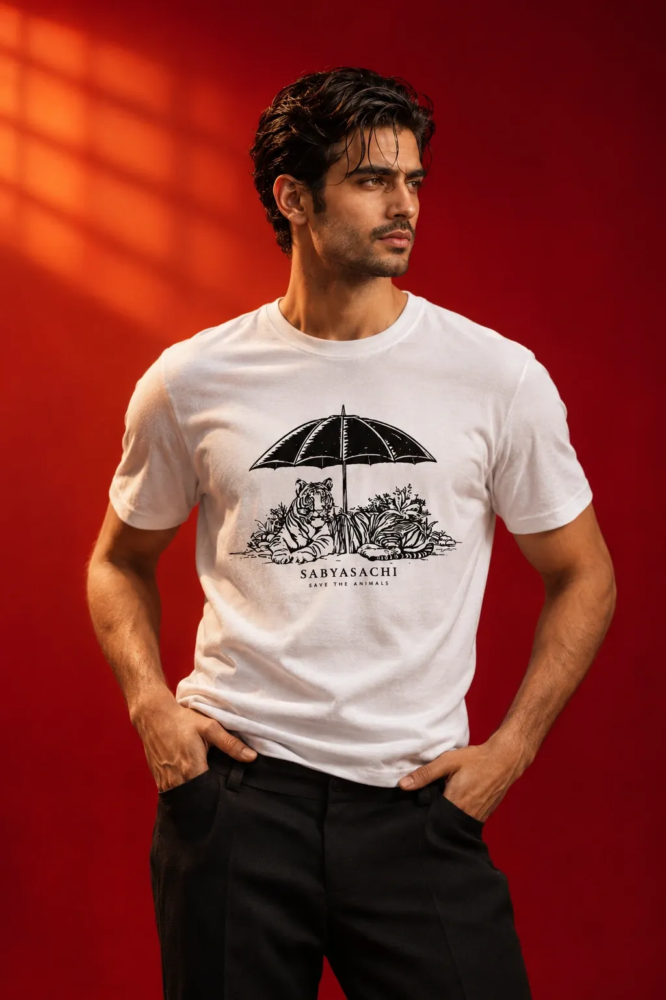

Gifts that help animals
Give a gift. Help an animal.
Every gift from People for Animals pays for rescue, treatment and care. For Deepawali, Christmas, New Year, a birthday or no reason at all.
Offers
This season.
Collections
The season's gifts.
All year
Gifts for any day.
Nothing to wrap: every one of them goes to the animals.

A gift in their name
A donation, as a gift
Give to the animals on someone's behalf. They are told it is from you.
Any amount
Give a giftPeople for Animals
A year of membership
Make someone a member: someone PFA can call on, and who can call on PFA.
Give membership
Designer x PFA
A designer T-shirt
Fifteen of India's designers, each a T-shirt for the animals. Half price.
₹2,500
See the T-shirts₹5,000